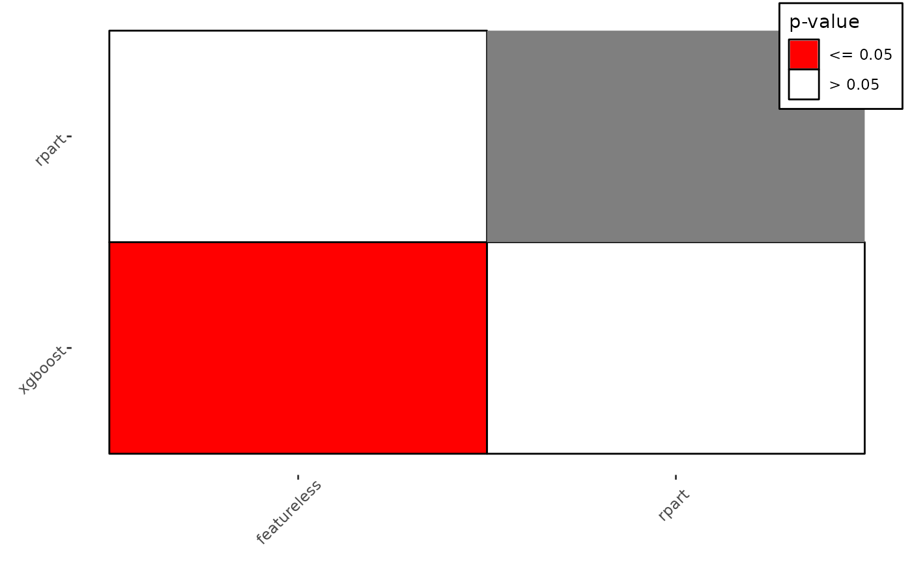

Generates plots for BenchmarkAggr, all assume that there are multiple, independent, tasks.
Choices depending on the argument type:
"mean" (default): Assumes there are at least two independent tasks. Plots the sample mean
of the measure for all learners with error bars computed with the standard error of the mean.
"box": Boxplots for each learners calculated over all tasks for a given measure.
"cd": Critical difference plots (Demsar, 2006), uses the $crit_differences method from
BenchmarkAggr. If a baseline is selected for the Bonferroni-Dunn test, the critical difference
interval will be positioned around the baseline. If not, the best performing algorithm will be
chosen as baseline. Learners are drawn on the y-axis according to their average rank.
For test = "nemenyi" a bar is drawn, connecting all groups of not
significantly different learners. For test = "bd" an interval is drawn around the algorithm
selected as a baseline and any learner within this interval is not significantly different
from the baseline.
"fn": Plots post-hoc Friedman-Nemenyi by first calling [BenchmarkAggr]$friedman_posthoc
and plotting significant pairs in coloured squares and leaving non-significant pairs blank.
# S3 method for BenchmarkAggr autoplot( obj, type = c("mean", "box", "cd", "fn"), meas = NULL, level = 0.95, p.value = 0.05, ... )
| obj | |
|---|---|
| type |
|
| meas |
|
| level |
|
| p.value |
|
| ... |
|
Janez Demsar, Statistical Comparisons of Classifiers over Multiple Data Sets, JMLR, 2006
if (requireNamespace("mlr3learners", quietly = TRUE)) { library(mlr3) library(mlr3learners) library(ggplot2) set.seed(1) task = tsks(c("iris", "sonar", "wine", "zoo")) learns = lrns(c("classif.featureless", "classif.ranger", "classif.xgboost")) bm = benchmark(benchmark_grid(task, learns, rsmp("cv", folds = 3))) obj = as.BenchmarkAggr(bm) # mean and error bars autoplot(obj, type = "mean") # critical differences autoplot(obj, type = "cd") # post-hoc friedman-nemenyi autoplot(obj, type = "fn") }